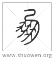
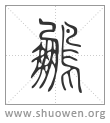

加入收藏
加入收藏

𢐴
古文鳳，象形。鳳飛，羣鳥從以萬數，故以爲朋黨字。

𪈵
亦古文鳳。
清代 段玉裁《說文解字注》
- 神鳥也。天老曰。
天老、黃帝臣。
- 鳳之像也。麐前鹿後。蛇頸魚尾。龍文龜背。燕頷雞喙。五色備舉。
麐前鹿後各本作鴻前麐後。又魚尾下有鸛顙鴛思四字。按爾雅釋文、大雅卷阿正義、初學記、論語疏所引皆作麐前鹿後。皆無鸛顙鴛思四字。惟左傳正義同今本。葢唐人所據原有二本。左疏所據非善本也。天老對黃帝之言見韓詩外傳。今外傳亦無此四字。郭氏山海經圖讚曰。八象其體。五德其文。云八象則益爲十者非矣。今皆更正。五德其文者、首文曰德。翼文曰順。背文曰義。腹文曰信。膺文曰仁也。見山海經。
- 出於東方君子之國。
見羊部羌下。
- 翺翔四海之外。過崐崘。
崐崘當作昆侖。
- 飲砥柱。濯羽弱水。
弱水部作溺。
- 莫宿風穴。
二語見淮南書。文選注引許愼曰。風穴、風所從出也。
- 見則天下大安寧。
黃帝、周成王之世是也。
- 从鳥。凡聲。
馮貢切。古音在七部。荀卿書引詩。有鳳有皇。樂帝之心。當作有皇有鳳。與心爲韵。
- 古文鳳。象形。
象其首及羽翼。
- 鳳飛。羣鳥從㠯萬數。故㠯爲朋黨字。
此說假借也。朋本神鳥。以爲朋黨字。韋本相背也。以爲皮韋。烏本孝烏也。以爲烏呼。子本十一月陽气動萬物滋也。人以爲偁。凡此四以爲皆言六書假借也。朋黨字何以借朋鳥也。鳳飛則羣鳥從以萬數也。未製鳳字之前假借固已久矣。猶習聞鳳至者爲之也。六部七部音冣相近。故朋在六部、蒸登韵。小篆鳳入七部。侵韵也。
- 亦古文鳳。
旣象其形矣。又加鳥旁。葢朋者冣初古文。鵬者踵爲之者也。莊子書。化而爲鳥。其名爲鵬。崔云古鳳字。按莊生寓言。故鯤、魚子也。鵬、羣鳥之一也。而皆云大不知其幾千里。